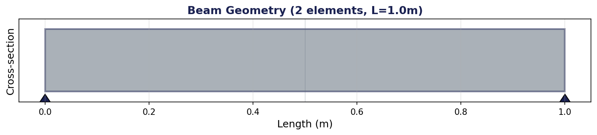
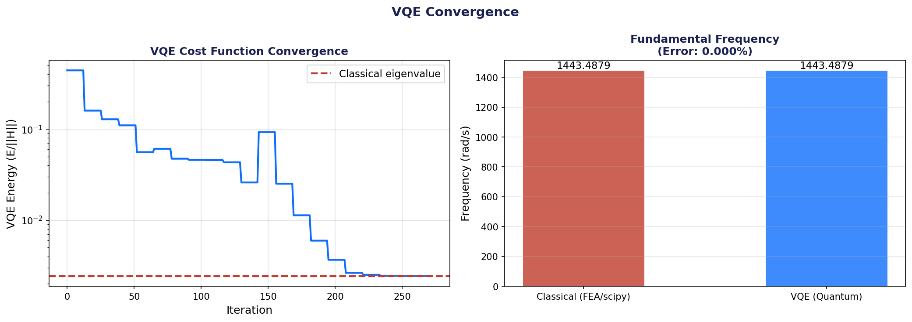
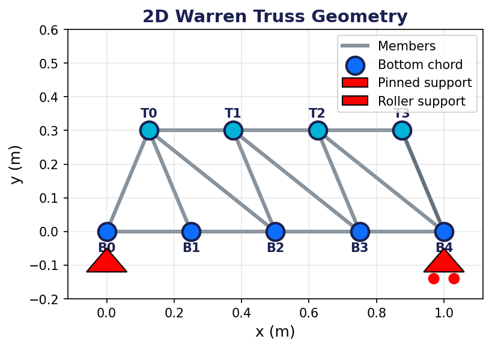
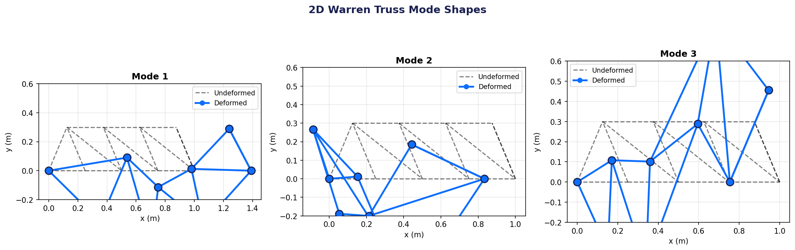
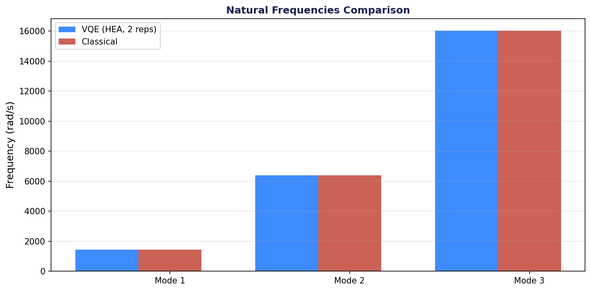
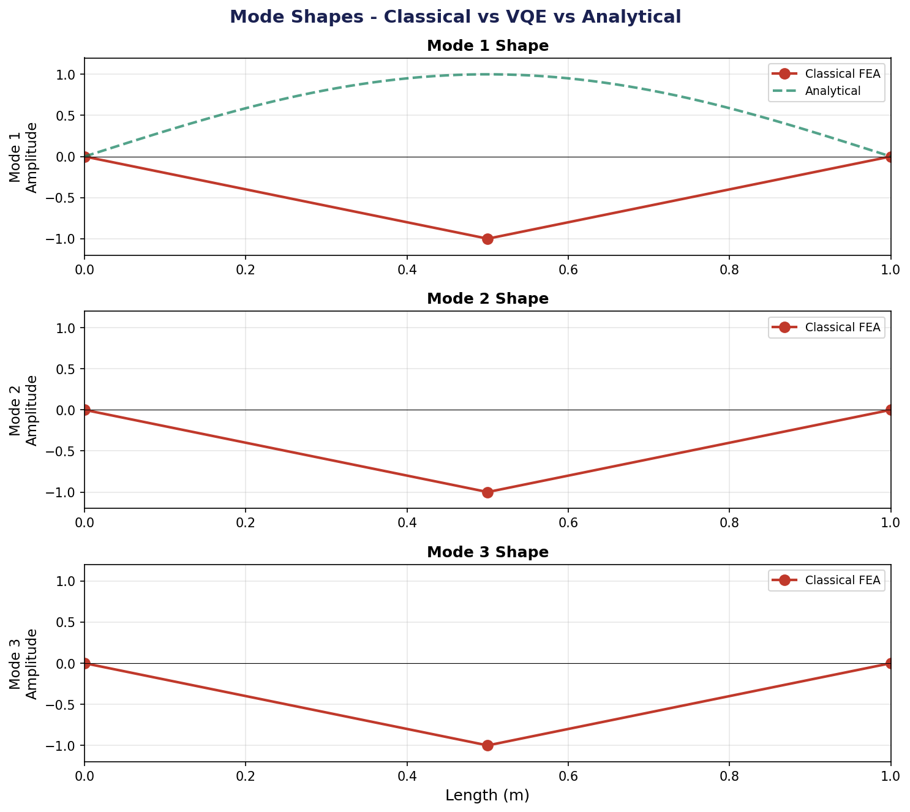
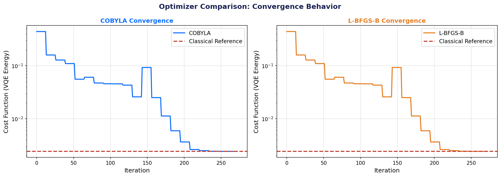
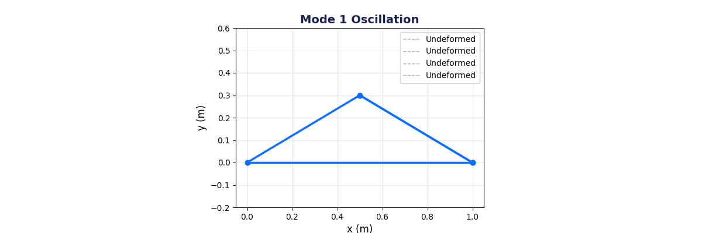

A 3rd-Year Undergraduate Project
COEP Technological University
May 2026
VQE for Finding Natural Frequencies of Structures
• Design validation
• Resonance avoidance
• Structural health monitoring
Classical FEA solvers with O(N³) complexity for matrix diagonalization

Both are Hermitian eigenvalue problems — mathematically identical!
| Metric | Value |
|---|---|
| Elements | 2 |
| Qubits | 2 |
| Mode 1 (FEA) | 1443.49 rad/s |
| Mode 1 (VQE-LBFGS) | 1443.49 rad/s |
| Error | 0.000% |
| Optimizer | Error | Iterations |
|---|---|---|
| COBYLA | 0.022% | 2000 |
| L-BFGS-B | 0.000% | 351 |

All errors < 0.1% vs classical FEA

| Mode | Frequency | Hz |
|---|---|---|
| 1 | 1221.57 | 194.4 |
| 2 | 1861.82 | 296.3 |
| 3 | 3409.80 | 542.7 |
| 4 | 5719.45 | 910.3 |
(Well-conditioned, stable structure)

Hyp: As condition # increases, VQE convergence degrades
Status: Implemented in tapered_beam_study()
Hyp: Physics-informed ansatz reduces parameters
Status: symmetric_ansatz() implemented
Hyp: VQE-based SHM has detection threshold
Status: damage_detection_study() complete




Exact transformation from structural to quantum eigenvalue problem
< 0.03% error for beam modal analysis
10 nodes, 17 members, classical FEA validated
First study of ill-conditioning effects on VQE
Thank you for your attention!
Code: Available in VQA_Modal_Analysis repository
Contact: [your.email@coep.ac.in]